Très bien, donc me voici dans Cloud Code, dans le terminal juste ici. Ce que vous remarquerez, c'est que cet agent est en fait mon agent Cloud Code. Donc, lorsque j'ai envoyé ce message où je lui demande de lancer deux agents chercheurs, l'un pour faire des recherches sur Google, l'autre pour faire des recherches sur OpenAI, puis de créer un diagramme visuel, vous verrez que cet agent reçoit effectivement cette tâche. Et maintenant, vous pouvez voir que nous avons trois agents qui s'exécutent réellement en ce moment en parallèle.
Interface & Outils : Visual Studio Code, terminal Claude Code v2.1.53, extension Pixel Agents.
Contenu textuel & Code : Prompt utilisateur : « Spin up two researcher agents. One to research Google, one to research Open AI. Then create a visual diagram to compare their strengths and weaknesses. »
Action / Démonstration : Saisie et exécution d'une requête dans le terminal Claude Code pour instancier des agents IA de recherche.
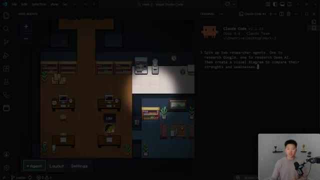
🔍 Agrandir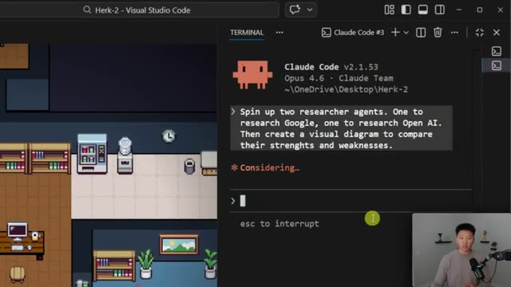
🔍 Agrandir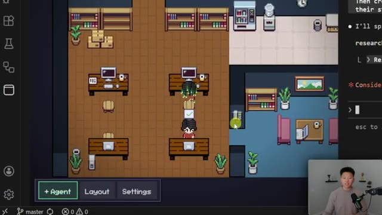
🔍 AgrandirCelui-ci recherche les points forts de Google AI, et celui-là recherche les points forts d'OpenAI. Et voici le principal qui a délégué les tâches à ces deux agents chercheurs, que vous pouvez également voir sur ce côté droit. C'est exactement ce qui est exécuté en ce moment. Et si je voulais ouvrir un autre terminal, pour ajouter un autre agent, il en insère un autre ici avec lequel je peux avoir une conversation différente.
Interface & Outils : VS Code, interface Pixel Agents, et terminal Claude Code v2.1.53.
Contenu textuel & Code : Texte du terminal indiquant le lancement de deux agents chercheurs ("Research Google AI strengths/weaknesses" et "Research OpenAI strengths/weaknesses") avec des requêtes de recherche web.
Action / Démonstration : Exécution en parallèle de deux agents IA pour effectuer des recherches sur Google AI et OpenAI, visualisée à la fois sous forme de bureau pixel art et de logs textuels.
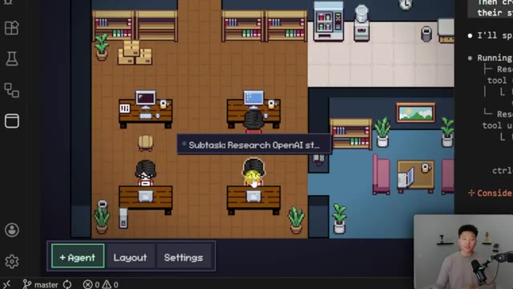
🔍 Agrandir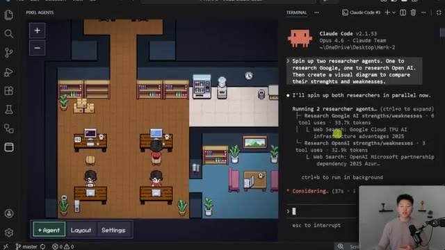
🔍 AgrandirDonne-moi une analyse rapide de ma section de commentaires YouTube des deux dernières vidéos que j'ai faites. Donc maintenant, j'envoie ce message à cet agent IA dans Cloud Code, et il va prendre en charge la tâche et commencer à travailler sur d'autres choses. Comme vous pouvez le voir maintenant, celui-ci recherche des fichiers et découvre ce qu'il doit faire. Et vous venez d'entendre ce petit bruit de notification, ce qui signifie que cela a lancé un sous-agent, et vous pouvez voir qu'il analysait les commentaires, mais maintenant il a besoin d'une approbation.
Interface & Outils : Visual Studio Code, Claude Code CLI, extension Pixel Agents.
Contenu textuel & Code : Commande `claude` exécutée et prompt utilisateur : "give me a quick analysis of my YouTube comment section from the past couple of videos I've made." avec le statut "Whirlpooling...".
Action / Démonstration : L'agent IA analyse les commentaires YouTube dans le terminal pendant que la simulation visuelle tourne à gauche.
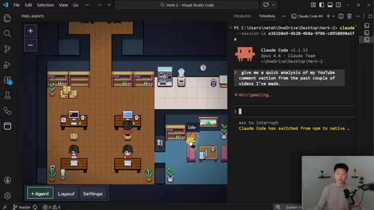
🔍 AgrandirDonc en gros, ce que nous avons ici, c'est une manière visuelle de voir tous les différents terminaux et sous-agents que nous avons en train de travailler dans Cloud Code. Nous recevons des notifications et nous obtenons des éléments visuels comme celui-ci qui nous disent ce qu'ils font. Donc je peux voir que ces sous-agents sur ce côté gauche sont en train de disparaître, alors je peux revenir sur ce premier terminal et je vais pouvoir voir que ce premier est déjà terminé, et maintenant celui d'OpenAI est encore en cours de traitement, qui est cet agent juste ici.
Interface & Outils : Visual Studio Code, Claude Code CLI, extension Pixel Agents
Contenu textuel & Code : Prompt utilisateur « give me a quick analysis of my YouTube comment section... » et exécution d'un sous-agent « youtube-analyzer »
Action / Démonstration : Un agent IA analyse les commentaires de vidéos YouTube et exécute des scripts en arrière-plan.
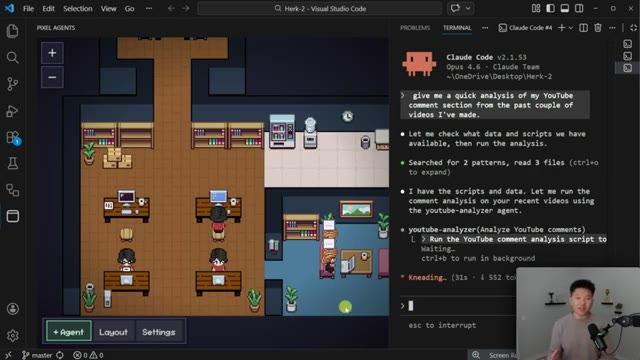
🔍 AgrandirBon, je ne sais pas où elle est partie, mais vous pouvez voir maintenant que ces deux agents ont terminé. Ils sont inactifs. Ils ont fini de travailler. Donc, dans le premier terminal, nous pouvons voir ici le visuel. C'est sorti proprement. Nous avons des éléments sur l'avantage de Google, les lacunes de Google, l'avantage d'OpenAI, les lacunes d'OpenAI. Donc voici cette visualisation réelle qu'il a créée. Nous avons les forces et les faiblesses pour Google et pour OpenAI.
Interface & Outils : Visual Studio Code (éditeur de code), interface Pixel Agents, et terminal intégré (Claude Code).
Contenu textuel & Code : Texte de résumé de recherche dans le terminal concernant Google (Gemini 3 Pro, infrastructure TPU, distribution, AlphaFold) et la sortie du fichier image généré.
Action / Démonstration : Affichage des résultats d'agents IA inactifs ayant terminé leur tâche de recherche et de génération visuelle.
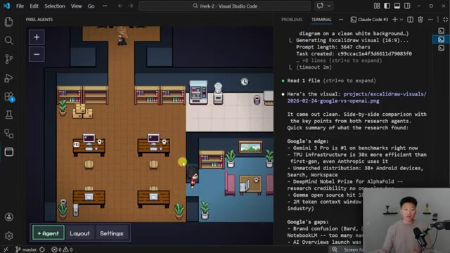
🔍 AgrandirParfois, la génération par IA peut être notoirement mauvaise avec le texte, mais celui-ci a l'air plutôt correct. Je ne vois que quelques erreurs. Et ensuite, en arrivant sur le deuxième terminal, nous pouvons voir l'analyse des commentaires au cours des deux dernières semaines. Nous avons donc quelques points de douleur concernant les coûts de l'API Claude, et cela s'est terminé dans le code de Claude, obtenir un premier client sans aucune preuve sociale. Nous avons les vidéos les plus demandées, nous avons des tendances notables, puis nous avons un aperçu des performances des vidéos récentes.
Interface & Outils : Visual Studio Code, affichage d'un diagramme et d'un terminal.
Contenu textuel & Code : Texte de comparaison Google vs OpenAI (forces et faiblesses) et analyse des commentaires des deux dernières semaines ("Top Pain Points", "Most Requested Videos").
Action / Démonstration : Présentation des résultats d'une analyse de commentaires par un agent IA dans l'interface de développement.
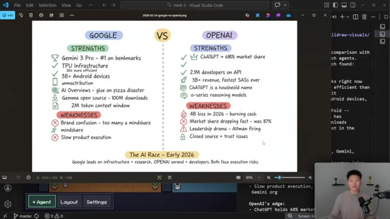
🔍 Agrandir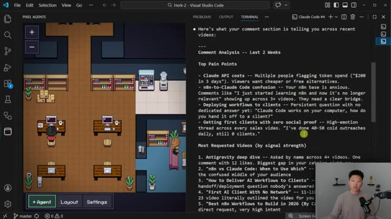
🔍 AgrandirMais je suis sûr que vous avez compris que le but de cette petite démo n'était pas vraiment de vous montrer les résultats, c'était de vous montrer ce que nous étions capables de faire ici et comment nous pouvions voir ces deux agents de terminal différents lancer des sous-agents, et comment nous pouvions garder un œil sur eux visuellement. Donc, malheureusement, je vais dire au revoir à ces agents pour qu'on puisse continuer la vidéo, et je vais fermer ces sessions de terminal ici même. Pour pouvoir vous expliquer en détail comment tout cela fonctionne et ce que j'en pense.
Interface & Outils : Visual Studio Code, interface Pixel Agents (panneau de gauche), Claude Code CLI (panneau de droite)
Contenu textuel & Code : "Spin up two researcher agents. One to research Google, one to research Open AI. Then create a visual diagram to compare their strengths and weaknesses."
Action / Démonstration : Exécution de commandes dans Claude Code pour lancer des sous-agents de recherche en parallèle observés via l'interface pixel art des agents.
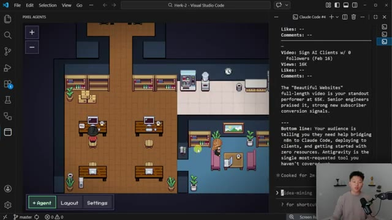
🔍 Agrandir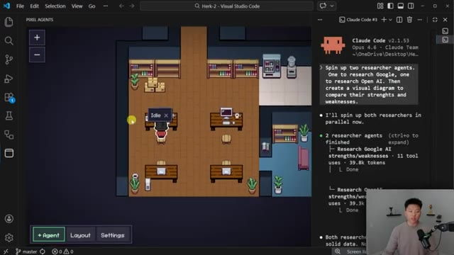
🔍 AgrandirD'accord, donc la façon dont nous faisons cela, c'est que nous utilisons Visual Studio Code, et c'est là que j'utilise Cloud Code comme extension si vous suivez ma chaîne depuis un moment. Nous utilisons une extension dans VS Code appelée Pixel Agents, qui transforme essentiellement vos agents de codage IA en personnages animés en pixel art dans un bureau virtuel que vous pouvez entièrement personnaliser. J'ai donc un lien vers cette page ici, et je mettrai un lien vers le dépôt GitHub dans la description, mais je vais aussi vous montrer exactement comment configurer tout cela.
Interface & Outils : Visual Studio Code, Visual Studio Marketplace
Contenu textuel & Code : Documentation de l'extension "Pixel Agents" qui transforme les agents de code IA en personnages animés en pixel art dans un bureau virtuel.
Action / Démonstration : Présentation de l'interface et de la page de téléchargement de l'extension VS Code Pixel Agents.
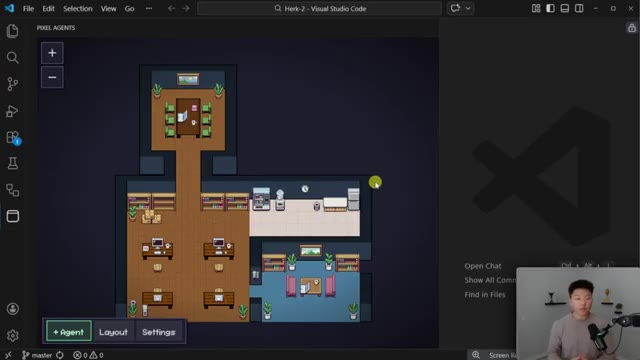
🔍 Agrandir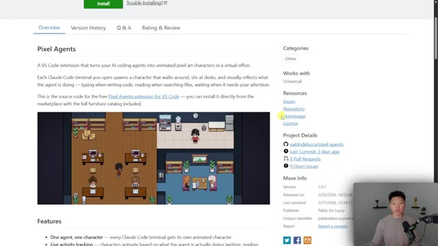
🔍 Agrandir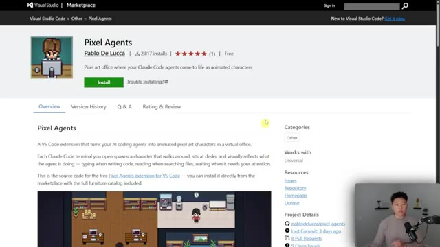
🔍 AgrandirDonc, avant de plonger là-dedans, rapidement, je voulais juste passer en revue ce qu'on fait ici et qu'est-ce que Cloud Code ? parce que ce sont les petits agents que nous étions en train de lancer. Eh bien, CloudCode est une IA dans notre terminal. Il peut écrire et éditer du code. Il peut comprendre notre base de code et il peut exécuter des commandes en notre nom. Et ce qui se passe quand vous utilisez un assistant de codage comme CloudCode, c'est que fondamentalement, vous regardez juste le terminal ou vous regardez ce que le modèle d'IA est en train de penser et ce qu'il est en train de faire.
Interface & Outils : Tableau blanc numérique / Outil de schématisation (ex: Excalidraw) avec le présentateur en incrustation vidéo.
Contenu textuel & Code : Texte et diagrammes illustrant les capacités de Claude Code : AI in Your Terminal, Writes & Edits Code, Understands Your Codebase, Runs Commands, ainsi qu'un flux séquentiel (Reading Files -> Planning -> Writing Code -> Running Tests).
Action / Démonstration : Le présentateur explique les concepts et fonctionnalités clés de Claude Code à l'aide de visuels schématiques.
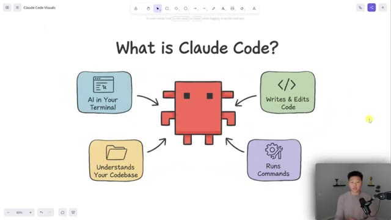
🔍 AgrandirMais ce qui se passe réellement en coulisses, c'est que des fichiers sont lus, des plans sont créés, du code est exécuté et des tests sont lancés. Il y a donc énormément de choses qui se produisent et que nous ne pouvons pas vraiment voir visuellement, surtout lorsque nous commençons à lancer des tonnes d'agents en parallèle et à faire tourner différents terminaux. Donc, en gros, ce qui se passe, c'est que CloudCode travaille, il crée un journal d'activité qui s'est déjà produit par défaut, et PixelAgents récupère simplement ce journal d'activité pour l'afficher ensuite sous une forme ou une autre d'animation.
Interface & Outils : Tableau blanc numérique / outil de dessin (ex: Excalidraw ou similaire).
Contenu textuel & Code : Schéma avec les sections 'What You See' (fenêtre avec du texte abstrait) et 'What's Actually Happening' (boîtes : Reading Files, Planning, Writing Code, Running Tests reliées par des flèches).
Action / Démonstration : Explication visuelle du fonctionnement interne des agents de code et des processus invisibles en arrière-plan.
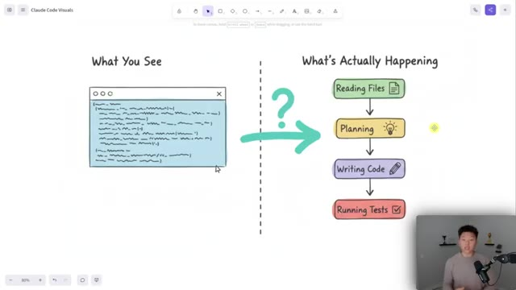
🔍 AgrandirC'est honnêtement un flux très similaire si vous regardez la façon dont j'ai configuré mon assistant personnel OpenClaw, et je pouvais voir sur quoi il travaillait et s'il lançait des sous-agents. Et comme je l'ai dit, c'est plutôt cool de pouvoir surveiller nos différents agents d'un seul coup d'œil plutôt que d'avoir à parcourir différents terminaux, surtout parce que j'adore faire du multitasking quand j'utilise CloudCode. Donc sur un moniteur, je code avec des trucs et sur l'autre moniteur, je travaille sur d'autres choses et je peux juste jeter un coup d'œil facilement de l'un à l'autre.
Interface & Outils : Tableau blanc numérique / outil de schématisation (type Excalidraw) avec incrustation vidéo du présentateur.
Contenu textuel & Code : Schéma en trois étapes : 1) 'Claude Code / AI works', 2) 'Activity Log (JSONL) / Logs actions', 3) 'Pixel Agents / Character animates'.
Action / Démonstration : Le présentateur explique le fonctionnement du flux de suivi des agents IA en s'appuyant sur le diagramme schématique.
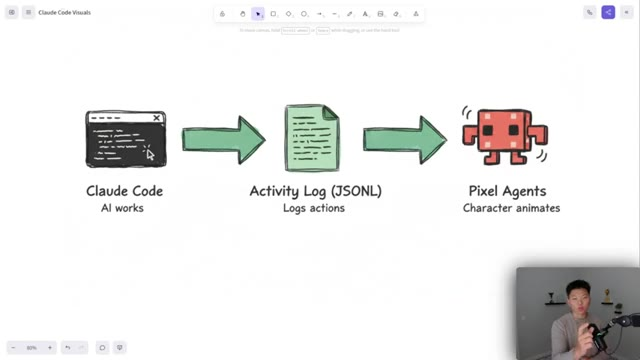
🔍 AgrandirDonc, si vous voulez vraiment essayer ça par vous-même, c'est super facile. Vous avez juste à aller télécharger Visual Studio Code si vous ne l'avez pas déjà. Malheureusement, pour l'instant, il y a seulement un support pour Windows. Donc, si vous êtes sur un Mac ou un système d'exploitation différent, je ne pense pas que vous puissiez utiliser ceci pour l'instant. C'est littéralement sorti il y a genre quelques jours. Mais bref, une fois que vous êtes dans une nouvelle instance de VS Code, voilà à quoi ça va ressembler.
Interface & Outils : Navigateur web affichant le site officiel de Visual Studio Code.
Contenu textuel & Code : Texte « The open source AI code editor » et bouton « Download for Windows ».
Action / Démonstration : Présentation du site officiel pour télécharger l'éditeur de code source.
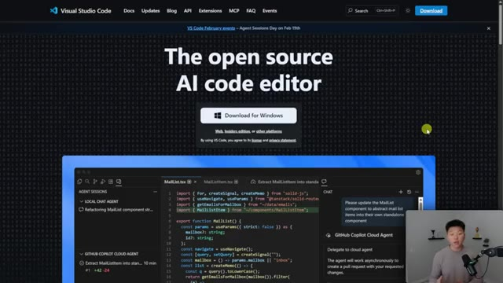
🔍 AgrandirEt ce que vous allez faire, c'est que sur ce côté gauche, vous allez aller dans extensions et vous allez littéralement taper pixel agents. Et si vous tapez pixel agents, vous pourrez voir juste ici, pixel art office où vos agents Cloud Code prennent vie. C'est celui que j'ai installé et que je viens de vous montrer en démo. C'est assez récent, mais je vais aborder des questions de sécurité vers la fin de la vidéo. Mais vous pouvez lire ceci pour comprendre exactement ce que cela fait.
Interface & Outils : Visual Studio Code (VS Code)
Contenu textuel & Code : Recherche d'extensions, nom de l'extension "Pixel Agents" par Pablo De Lucca, description et détails.
Action / Démonstration : Navigation dans le marché des extensions VS Code pour rechercher et sélectionner l'extension Pixel Agents.
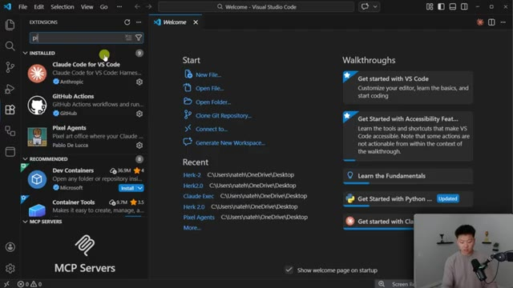
🔍 Agrandir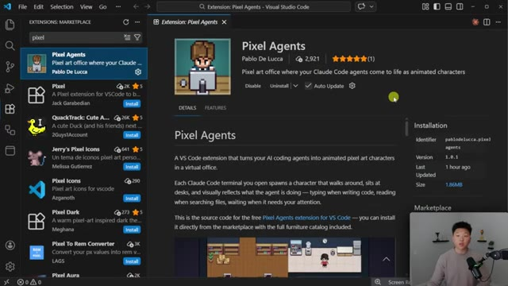
🔍 AgrandirVous avez essentiellement un agent par personnage. Vous avez un suivi de l'activité en direct. Vous pouvez concevoir le bureau avec les étages, les meubles, tout ce genre de choses. Vous pouvez voir des bulles de dialogue. Vous obtenez des notifications sonores, une visualisation des sous-agents, et il y a six personnages différents qui peuvent apparaître. Cela va entrer dans certains détails sur les exigences et cela va aborder certaines choses sur la façon de l'utiliser réellement. Mais si vous voulez le tester, alors foncez ici.
Interface & Outils : Visual Studio Code (Marketplace des extensions)
Contenu textuel & Code : Page de description de l'extension 'Pixel Agents' par Pablo De Lucca, listant des fonctionnalités comme le suivi d'activité en direct, l'éditeur de disposition de bureau et les bulles de dialogue.
Action / Démonstration : Navigation et présentation des fonctionnalités de l'extension VS Code pour visualiser les agents IA en pixel art.
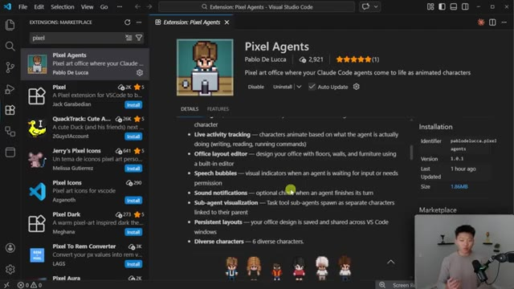
🔍 AgrandirEt voici où, malheureusement, il est indiqué que pour l'instant, c'est un test réservé à Windows. Et sur la feuille de route, vous pouvez voir qu'il y a beaucoup de choses qu'ils veulent ajouter, comme avoir des équipes d'agents de code cloud, car pour l'instant, ce sont juste des agents en parallèle. Donc de toute façon, une fois que vous avez installé ça, ce que vous allez faire, c'est ouvrir un dossier. Donc disons que vous venez dans l'Explorateur et que vous ouvrez un projet sur lequel vous voulez travailler.
Interface & Outils : Visual Studio Code (Marketplace des extensions)
Contenu textuel & Code : Documentation de l'extension Pixel Agents incluant une section "Roadmap" avec des éléments sur l'amélioration des agents, la détection de statut et les équipes d'agents.
Action / Démonstration : Navigation et consultation de la description et de la feuille de route de l'extension Pixel Agents dans VS Code.
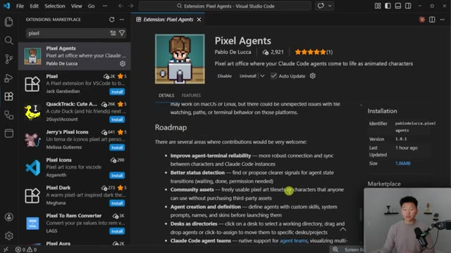
🔍 AgrandirAlors ici, je viens juste d'ouvrir mon Herc 2, qui est en gros mon assistant exécutif de type deuxième cerveau. C'est vraiment bizarre, mais si vous voulez que ce projet fonctionne, votre dossier ne doit pas contenir d'espace ou de point. Comme vous pouvez le voir en bas, ça s'appelait avant Herc espace 2.0, puis c'était Herc 2.0, et maintenant c'est Herc tiret 2. Assurez-vous donc de ne pas avoir ces éléments là-dedans si vous voulez que les agents Pixel détectent réellement le journal d'activité et reflètent ce que vous faites. De rien, j'ai dû l'apprendre à la dure. Donc, une fois que vous êtes ici, vous allez ouvrir le terminal. Donc si je suis sur Windows, je vais faire contrôle puis le petit tilde, et cela ouvre le terminal.
Interface & Outils : Visual Studio Code (VS Code)
Contenu textuel & Code : Structure de dossiers du projet HERK-2 incluant .claude (agents, rules, skills), settings.json, archives, brand-assets, context, decisions, projects, references, scripts, templates, .env, .gitignore, CLAUDE.local.md, CLAUDE.md, google-oauth.json.
Action / Démonstration : Navigation dans l'arborescence des dossiers et fichiers du projet d'assistant exécutif.
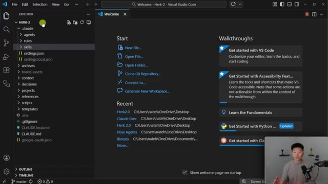
🔍 AgrandirEt ensuite, voici où vous pouvez voir que j'ai un onglet Pixel Agents qui ouvre le petit espace de travail. Maintenant, ce que je veux faire, c'est voir du 50-50. Donc, je prends essentiellement ceci et je le glisse vers la barre latérale, ce qui me permet de le regarder ici, et ensuite tout ce que j'ai à faire est de cliquer sur "plus agent", et cela ouvre fondamentalement un terminal Cloud Code du côté droit, et cela fait apparaître un agent ici, comme vous pouvez le voir. Maintenant, cet agent est inactif parce qu'il ne travaille sur rien. Donc, si je procède en disant : "S'il te plaît, lance un agent de recherche et découvre simplement ce qui se passe avec les petites entreprises et l'adoption de l'IA", et que j'envoie ça, alors cet agent devrait prendre en charge cette tâche et il devrait
Interface & Outils : Visual Studio Code (VS Code), interface Pixel Agents, Terminal intégré (Claude Code)
Contenu textuel & Code : Arborescence de fichiers du projet, interface pixel art d'un bureau virtuel d'agents IA, et terminal Claude Code v2.1.53 (Opus 4.6)
Action / Démonstration : Réorganisation des onglets de VS Code en affichage partagé (split-screen) pour afficher l'interface Pixel Agents et le terminal simultanément
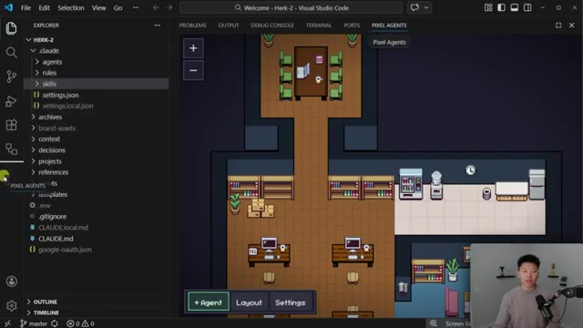
🔍 Agrandir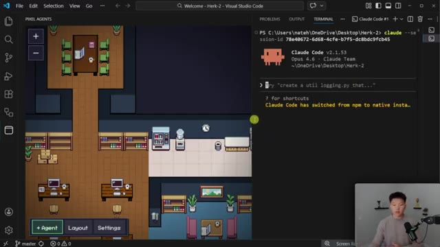
🔍 Agrandir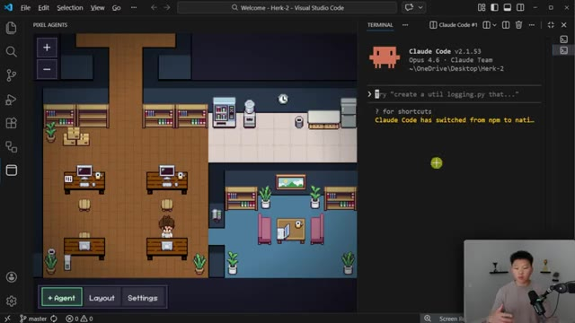
🔍 AgrandirJe vais aussi lancer un sous-agent. Je vais en ajouter un autre qui ouvre un autre terminal et je peux ajouter de plus en plus d'agents afin que nous puissions voir que nous pouvons regarder ces cinq terminaux différents fonctionner en même temps. Et ensuite, ce que vous pouvez faire ici, c'est aller dans votre disposition et modifier les choses. Je pourrais donc déplacer cet élément, par exemple, je peux le déplacer juste ici.
Interface & Outils : Visual Studio Code (VS Code) avec une interface graphique de simulation d'agents en pixel art et un terminal intégré.
Contenu textuel & Code : Interface graphique montrant un bureau virtuel en pixel art avec des personnages, un menu bas (boutons "+ Agent", "Layout", "Settings") et un panneau de terminal vide sur la droite.
Action / Démonstration : Le présentateur présente l'interface visuelle des agents en pixel art intégrée dans l'éditeur de code, se préparant à ajouter de nouveaux sous-agents.
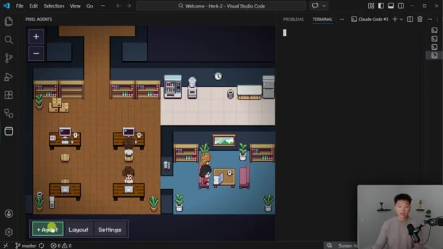
🔍 AgrandirJe pourrais aller dans mobilier et j'ai du stockage, j'ai de la techno, j'ai de la déco, j'ai tout ce genre de trucs. Je pourrais littéralement juste mettre un moniteur au milieu du sol de la cuisine si je le voulais, et je pourrais continuer à en rajouter de plus en plus. Donc c'est plutôt marrant, tu peux entièrement personnaliser l'apparence de tout ça et les couleurs du genre des sols et des murs et des trucs comme ça. Et l'autre paramètre avec lequel tu peux vraiment t'amuser, ce serait d'ouvrir le dossier des sessions pour voir ce qui se passe, ce qui ouvre un dossier comme celui-ci pour voir le journal d'activité et tout.
Interface & Outils : Visual Studio Code (VS Code), interface web interactive Pixel Agents, Terminal Claude Code.
Contenu textuel & Code : Interface graphique montrant un bureau virtuel en pixel art (Pixel Agents) avec des options de mobilier et de technologie, et un terminal Claude Code exécutant une recherche sur l'adoption de l'IA par les PME.
Action / Démonstration : Navigation dans les menus de personnalisation du bureau virtuel et exécution d'un agent de recherche dans le terminal.
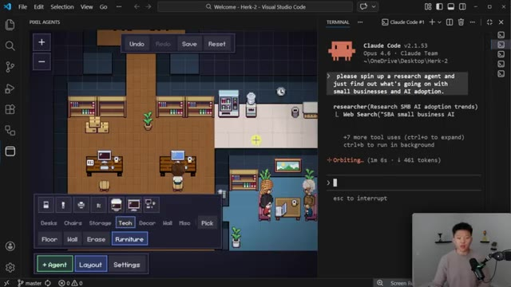
🔍 Agrandir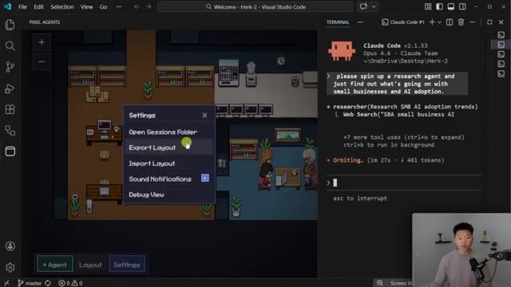
🔍 AgrandirVous pouvez également vous rendre dans la vue de débogage pour voir sur quoi les agents travaillent réellement, et vous pouvez activer ou désactiver les notifications sonores, ce qui est plutôt sympa. Vous pourriez évidemment utiliser quelque chose comme des webhooks pour faire cela dans les deux cas, mais c'est bien que ce soit désormais en quelque sorte natif avec cette extension. Donc je ne vais pas passer trop trop de temps ici, vraiment. Je pense que vous comprenez tous exactement ce qui se passe. Vous pouvez voir que cet agent vient juste de terminer, un timing parfait.
Interface & Outils : Visual Studio Code, terminal Claude Code (v2.1.53), extension/interface "Pixel Agents".
Contenu textuel & Code : Log d'exécution de Claude Code : "please spin up a research agent...", suivi de "researcher(Research SMB AI adoption trends)" et du statut "Done" (8 tool uses).
Action / Démonstration : Navigation dans le menu des paramètres (Image 1) pour configurer les notifications et le mode débogage, puis affichage du monitoring d'un agent de recherche (Image 2).
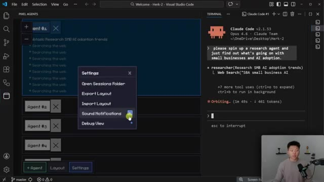
🔍 Agrandir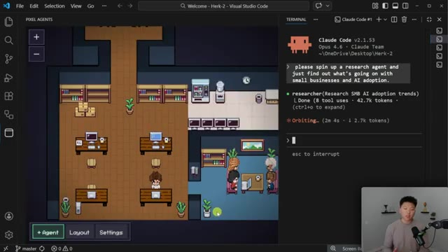
🔍 AgrandirJe pensais devoir conclure cette vidéo en parlant simplement de, quel est le but de tout ça ? Est-ce que c'est juste inutile ? Donc mon premier point concerne le divertissement. Je pense qu'il y a de la valeur à avoir ça comme juste un truc qui est amusant. Et la raison pour laquelle je dis ça est en quelque sorte double. La première est que, pas mal de temps, comme je l'ai dit tout à l'heure, j'ai deux écrans d'allumés et j'ai Claude Code qui tourne par ici et je travaille sur d'autres choses par là.
Interface & Outils : Visual Studio Code (Image 1), outil de dessin numérique/tableau blanc type Excalidraw (Image 2).
Contenu textuel & Code : Texte détaillé sur l'évolution de l'IA ("AI as a tool" vers "AI agents"), projection de marché à 52 milliards de dollars, et note "Watching your agents work is fun!".
Action / Démonstration : Présentation visuelle du concept d'agents autonomes en action suivie d'une schématisation conceptuelle illustrant la valeur ludique de l'observation des agents.
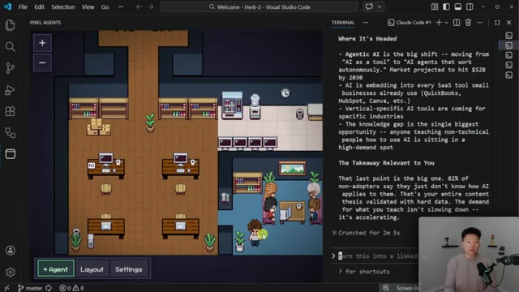
🔍 Agrandir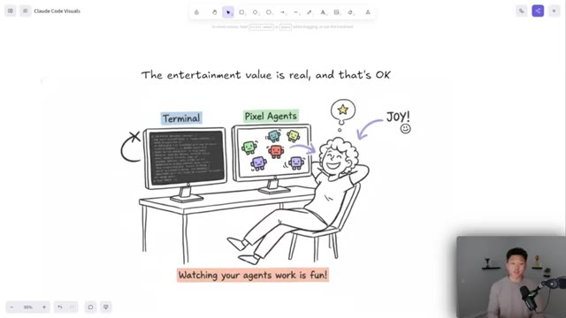
🔍 AgrandirEt c'est plutôt agréable de pouvoir jeter un œil et de voir combien d'agents sont actifs ou si je dois leur assigner davantage de tâches ? Mais l'autre aspect, c'est que je pense que c'est visuel et que cela pourrait attirer certaines personnes qui ne sont pas super techniques ou qui sont intimidées par l'idée de regarder un terminal. Je pense que c'est très similaire à la façon dont n8n a commencé à faire un tabac, c'est parce qu'ils avaient visuellement de bons éléments que les gens avaient l'impression de pouvoir réellement comprendre rien qu'en les regardant.
Interface & Outils : Tableau blanc numérique / outil de dessin (ex: Excalidraw) avec incrustation vidéo du présentateur.
Contenu textuel & Code : Texte : "The entertainment value is real, and that's OK" et "Watching your agents work is fun!", avec des illustrations de terminal et de "Pixel Agents".
Action / Démonstration : Le présentateur commente le côté visuel et divertissant des agents IA, rendant la technologie plus accessible aux non-techniciens.
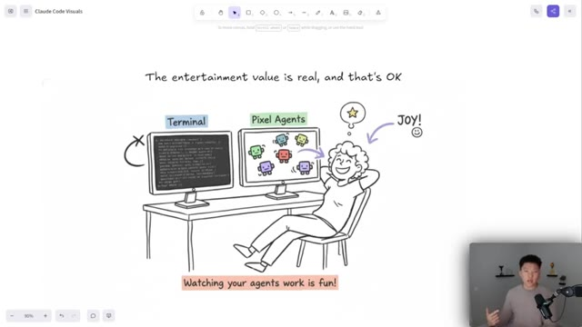
🔍 AgrandirEt cela m'amène un peu à mon deuxième point, qui concerne le fait que c'est exactement ce qui manque au codage par IA, ce sont les éléments visuels. Parce que, comme je l'ai dit plus tôt, ce que nous regardons est un terminal ou, en gros, une fenêtre de chat. Alors que dans NNN ou quelque chose comme ça, vous voyez des flux de travail visuels, vous voyez le processus des données et vous voyez des choses être construites ou modifiées.
Interface & Outils : Tableau blanc numérique / outil de mindmapping ou de dessin (style Excalidraw)
Contenu textuel & Code : Texte « AI coding lacks visual elements », comparaison entre « AI Coding Today » (écran de terminal rouge avec un personnage perplexe) et « Visual Workflows » (écran vert avec un diagramme de processus et une ampoule allumée).
Action / Démonstration : Le présentateur explique conceptuellement les lacunes du codage textuel par IA par rapport aux interfaces visuelles.
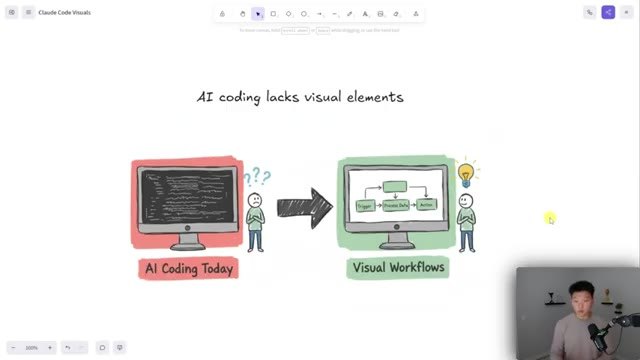
🔍 AgrandirMaintenant, évidemment, Pixel Agents ce n'est pas ça. Ce n'est pas une représentation de ce qu'ils font réellement. C'est juste comme vous montrer combien vous en faites, mais je pense vraiment que c'est un pas dans la bonne direction, parce que je pense qu'en fin de compte, là où j'aimerais aller, c'est vers un endroit où Cloud Code me construit, vous savez, des flux de travail et des automatisations et qu'il me montre en train de les construire dans une interface de style n8n où je peux voir le flux.
Interface & Outils : Tableau blanc numérique ou application de mindmapping / dessin de type Excalidraw.
Contenu textuel & Code : Texte principal : 'AI coding lacks visual elements'. Section rouge à gauche : 'AI Coding Today'. Section verte à droite : 'Visual Workflows'.
Action / Démonstration : Le présentateur explique conceptuellement la transition nécessaire entre le code textuel et les représentations visuelles des agents.
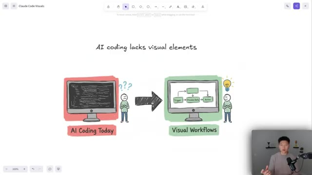
🔍 AgrandirEt ensuite, nous pouvons parler de la surveillance multi-agents. Il y a beaucoup de choses qui peuvent se passer avec différents agents, que vous les exécutiez en parallèle dans différents terminaux, ou que vous ayez des sous-agents, ou que vous ayez des équipes d'agents. Et c'était plutôt cool ici que, vous savez, chacune de ces personnes soit son propre terminal. Et donc si je vois quatre exemplaires de cette fille, je sais qu'il s'agit d'un agent principal et de quatre sous-agents, alors que tous ceux-ci ne sont que des agents différents s'exécutant dans des terminaux parce qu'il s'agit de choses différentes.
Interface & Outils : Tableau blanc numérique, VS Code, interface graphique en pixel art (Pixel Agents) et terminal intégré.
Contenu textuel & Code : Schéma illustrant la surveillance multi-agents (agents parallèles, sous-agents, équipes d'agents) et interface visuelle montrant des agents au travail avec du texte de sortie dans le terminal.
Action / Démonstration : Présentation conceptuelle des différents modes de fonctionnement multi-agents suivie d'une démonstration visuelle d'agents autonomes dans un environnement virtuel style pixel art.
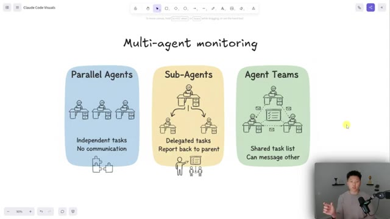
🔍 Agrandir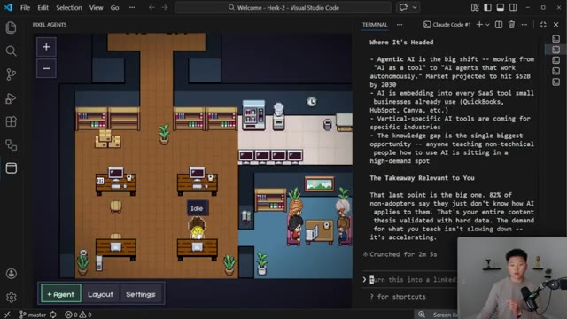
🔍 AgrandirDes agents parallèles, vous savez, quatre agents de terminal différents. Des sous-agents qui délèguent visiblement des tâches à différents sous-agents. Ces sous-agents peuvent utiliser différents modèles et ils ont, vous savez, leur propre contexte indépendant. Et puis vous avez des équipes d'agents, que Pixel Agent ne montre pas encore en réalité, mais les équipes d'agents travaillent ensemble un petit peu mieux. Elles ne partagent pas nécessairement le contexte, mais elles partagent une liste de tâches.
Interface & Outils : Tableau blanc numérique / outil de mindmapping et visio-conférence.
Contenu textuel & Code : Texte et illustrations schématiques décrivant les 'Parallel Agents' (tâches indépendantes), 'Sub-Agents' (tâches déléguées) et 'Agent Teams' (liste de tâches partagée).
Action / Démonstration : Le présentateur explique les différents modes d'interaction et de supervision des agents IA.
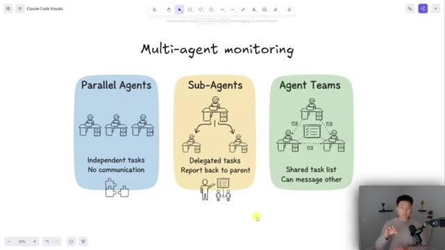
🔍 AgrandirIls peuvent se parler entre eux et ils comprennent quand l'autre personne a terminé ou quand l'autre agent a terminé. Et même Boris, le génie qui est en quelque sorte derrière CloudCode, a dit qu'il utilise, vous savez, cinq agents dans son terminal en permanence et puis peut-être 10 autres sur le web ou quelque chose comme ça. Il travaille donc toujours avec des tonnes d'agents différents. Je suis donc vraiment curieux de voir ce que CloudCode va faire en matière de visualisation un peu plus native.
Interface & Outils : Tableau blanc numérique / Outil de schématisation (type Excalidraw)
Contenu textuel & Code : Texte et illustrations schématiques sur l'organisation des agents IA : Parallel Agents (tâches indépendantes), Sub-Agents (tâches déléguées), et Agent Teams (liste de tâches partagée et communication entre agents).
Action / Démonstration : Présentation visuelle et explication des différents modes de fonctionnement et de communication des agents multiples.
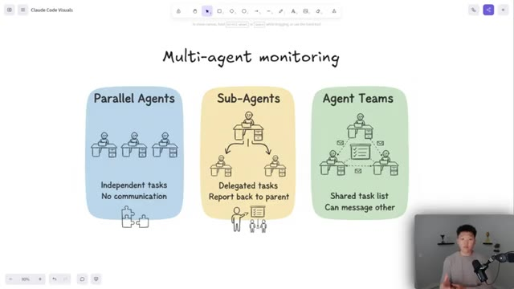
🔍 AgrandirDonc, rapidement, abordons la sécurité de ce plugin, car vous ne devriez vraiment installer que des extensions qui sont vérifiées ou dont vous savez qu'elles sont sûres. Donc, avant de l'installer, je me suis juste un peu renseigné à son sujet. L'éditeur s'appelle Pablo De Luca. C'est un éditeur vérifié sur le Marketplace de VS Code. J'ai regardé son parcours et c'est une vraie personne. Il est cofondateur d'une entreprise et il a un dépôt GitHub avec 1300 étoiles et plus de 100 forks.
Interface & Outils : Interface web de notes ou de présentation visuelle (type canvas/whiteboard) avec incrustation vidéo du présentateur.
Contenu textuel & Code : Texte explicatif sur l'éditeur Pablo De Luca, les statistiques GitHub du projet et un tableau d'audit de sécurité (Outbound network calls, Data exfiltration, Shell command injection, etc.).
Action / Démonstration : Le présentateur commente le document de présentation détaillant l'audit de sécurité de l'extension VS Code.
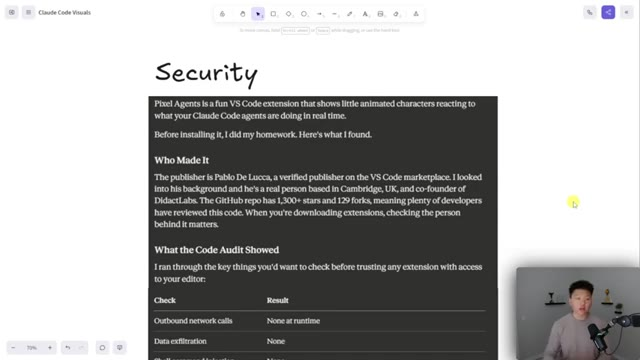
🔍 Agrandir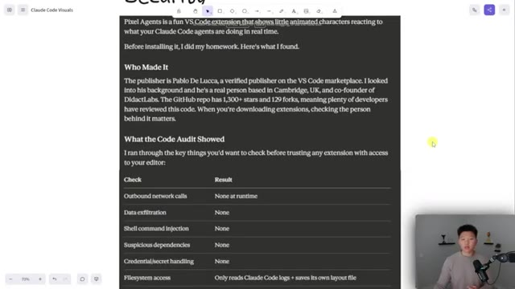
🔍 AgrandirDonc je pense que cela signifie qu'il a un petit peu de crédibilité. Il n'a pas créé une sorte de faux profil pour publier quelque chose là-bas afin de voler vos données. Nous avons donc examiné quelques éléments clés tels que les appels réseau sortants, l'exfiltration de données, l'injection de commandes shell, les dépendances suspectes, les identifiants, la gestion des secrets, l'accès au système de fichiers et le chargement de scripts à distance, et nous n'avons rien vu. Il ne semble donc pas envoyer de données nulle part, il ne collecte rien, il n'exécute aucune commande, et tout reste sur votre machine. C'est donc pour cela que je me suis senti en confiance pour l'installer et le tester. Je voulais donc simplement partager mon expérience d'un point de vue de la sécurité. Donc, dans l'ensemble, ce que je ressens à ce sujet, c'est que PixelAgent m'indique simplement qu'un agent ou des agents sont en train de travailler. Ce que je veux réellement savoir
Interface & Outils : Application de prise de notes ou tableau blanc virtuel (type Miro ou Obsidian Canvas).
Contenu textuel & Code : Tableau présentant les checks de sécurité : "Outbound network calls", "Data exfiltration", "Shell command injection", "Suspicious dependencies", "Credential/secret handling", "Filesystem access", et "Remote script loading", tous avec le résultat "None" ou une mention de sécurité.
Action / Démonstration : Présentation visuelle d'un audit de sécurité pour rassurer l'utilisateur sur la fiabilité d'une extension VS Code.
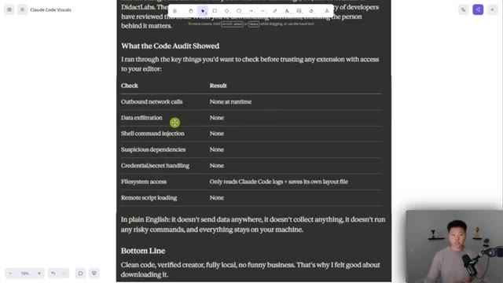
🔍 Agrandir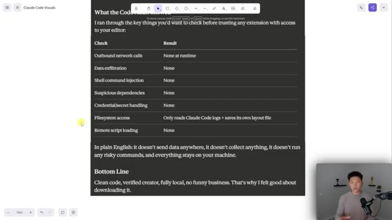
🔍 Agrandir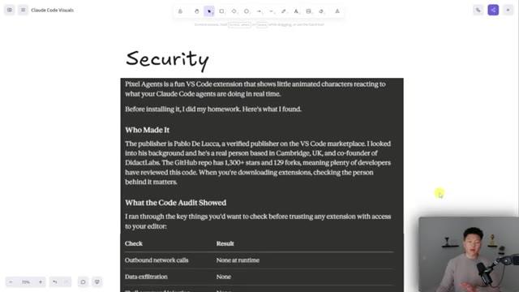
🔍 Agrandirc'est ce qu'ils construisent, quelles décisions ils prennent, et si c'est sur le point de faire quelque chose avec lequel je serais d'accord ou pas d'accord. C'est le véritable produit dont je pense que nous avons besoin lorsqu'il s'agit de visualisation, parce que nous, en tant qu'humains, nous évoluons vers ce monde où nous devons vraiment juste être de très bons managers et maintenir nos agents et nos sous-agents sur le bon chemin. Et la meilleure façon de faire cela, c'est d'être capable de simplement voir tout le temps ce qui se passe, d'arrêter les choses avant qu'elles ne tournent mal, et de continuer à leur donner de manière proactive plus de travail pour qu'ils ne restent jamais là à ne rien faire.
Interface & Outils : Tableau blanc numérique (type Excalidraw ou similaire) avec la vidéo du présentateur en bas à droite.
Contenu textuel & Code : Texte manuscrit : "Pixel Agents tells me an agent is working. What I actually want to know is what it's building, what decisions it's making, and whether it's about to do something I'd disagree with. That's the real product someone needs to build." et schémas comparatifs "AI Coding Today" versus "Visual Workflows".
Action / Démonstration : Présentation conceptuelle et schématique illustrant le besoin d'outils de visualisation pour le développement assisté par IA.
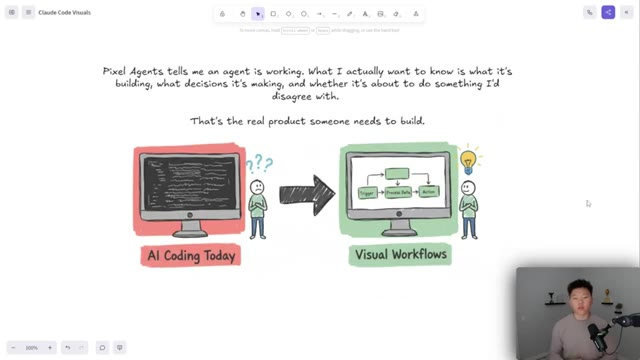
🔍 AgrandirMais bref, c'est tout pour aujourd'hui. Si vous voulez approfondir tout ce genre de sujets et faire un peu de techno, alors allez absolument jeter un œil à mon groupe payant, AI Automation Society Plus. Nous avons plus de 3 000 membres qui créent avec l'IA chaque jour et qui bâtissent des entreprises avec l'IA. C'est donc un endroit formidable si vous avez des objectifs similaires. Mais si vous avez apprécié la vidéo ou si vous avez appris quelque chose de nouveau, n'hésitez pas à mettre un pouce bleu. Ça m'aide énormément. Et comme toujours, je vous remercie d'être arrivés jusqu'à la fin de la vidéo. Je vous dis à la prochaine. Merci à tous.
Interface & Outils : Skool (communauté privée), Excalidraw (tableau blanc numérique).
Contenu textuel & Code : Publications des membres ("So I Just Fully Rebuilt My Website", "Starting a AI Outbound Agent"), statistiques de groupe, texte "The entertainment value is real, and that's OK" et "Watching your agents work is fun!".
Action / Démonstration : Navigation sur la plateforme communautaire (Image 1) ; présentation visuelle d'un concept ludique sur le travail des agents IA (Image 2).
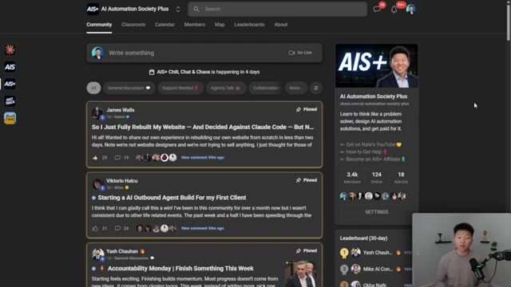
🔍 Agrandir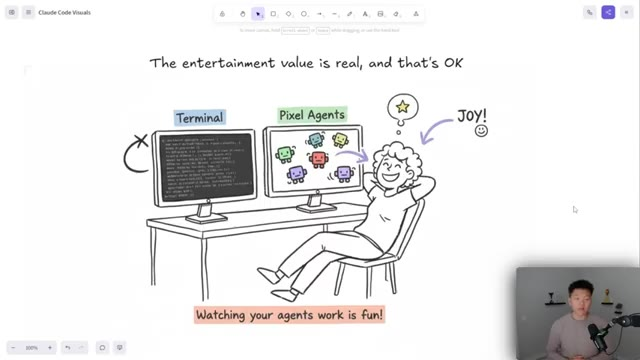
🔍 Agrandir